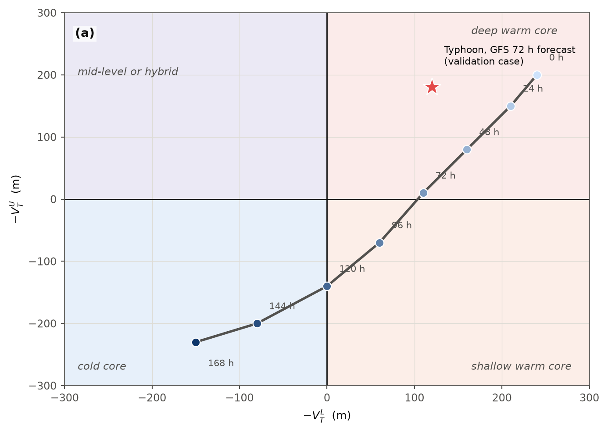

Gridded Cyclone Phase Space as an AWIPS Derived Parameter for Diagnosing Tropical Cyclone Structure and Extratropical Transition
Abstract
The cyclone phase space of Hart (2003) characterizes a cyclone's thermal structure through the lower- and upper-tropospheric thermal wind, derived from the vertical change of the geopotential height perturbation within 500 km of the storm center, together with a measure of low-level thermal asymmetry. Evans and Hart (2003) showed that the crossings of these parameters provide objective onset and completion times for extratropical transition (ET), and Hart et al. (2006) linked the post-transition trajectory to whether a system re-intensifies as a warm-seclusion cyclone of the type described by Shapiro and Keyser (1990). Operational access to these diagnostics has been limited to static, storm-centered plots produced externally for tracked tropical cyclones, which excludes the hybrid, post-tropical, and non-tropical systems of greatest concern to marine forecast offices. This work reformulates the thermal wind parameters as gridded fields computed on demand inside the AWIPS II display system as derived parameters, requiring only geopotential height on standard isobaric levels and surface pressure, and therefore available for every model in the local inventory without a cyclone tracker. At each grid point the height perturbation amplitude is evaluated over a 500 km window using a separable sliding-extrema filter, the thermal wind is obtained by regression against log pressure over 925 to 700 hPa and 500 to 300 hPa, terrain is handled by excluding below-ground levels, and a closed-low detector on 1000 hPa height restricts classification to closed cyclones at least 5 hPa deep. A categorical structure field (deep warm, shallow warm, neutral, cold core) and a continuous index summarize the two terms. Computation on a global 0.25 degree grid takes about one second per forecast hour. An initial evaluation on GFS forecasts found values for a mature typhoon within the range Hart reported for hurricanes, a correct cold-core classification of a deep North Atlantic cyclone, and an ET onset time for Typhoon Dujuan that matched the storm-centered diagnosis on the Florida State University cyclone phase page for the same model run. A simpler formulation based on vertical differences of relative vorticity was found to misclassify vertically tilted and broad baroclinic systems as warm core and was retained only for comparison. Limitations include the use of standard levels in place of Hart's 50 hPa spacing, the absence of the asymmetry parameter, and validation on a small number of cases; a full season of operational use at the Ocean Prediction Center is planned.
1. Background
Cyclone phase space (CPS) describes a cyclone's thermal structure from the geopotential height field alone, with no appeal to satellite presentation or a forecaster's eye [1]. Three numbers locate a storm in the space: B, the left–right asymmetry of low-level thickness across the storm's track, and the lower- and upper-tropospheric thermal wind parameters −VTL and −VTU, which are positive for a warm (tropical-like) core and negative for a cold (baroclinic) one. Structure matters to marine forecasting because it anticipates two behaviors a track and intensity forecast alone do not: a storm undergoing extratropical transition (ET) typically expands its wind field well beyond the radius it carried as a tropical cyclone, and a storm that instead completes ET into a warm-seclusion cyclone — the frontal-fracture structure described by Shapiro and Keyser (1990) [4] — can re-intensify to hurricane-force winds far outside the tropics [3]. Evans and Hart (2003) showed that the crossings of −VTL and −VTU through zero give objective ET onset and completion times [2], and Jones et al. (2003) catalogued the forecast challenges ET poses more broadly [5]. Until now, operational access to these parameters has meant a static, storm-centered plot produced externally for a tracked tropical cyclone — leaving exactly the hybrid, post-tropical, and non-tropical systems a marine forecaster most needs help with off the page entirely, because no tracker follows them.

2. Method
At each pressure level p, the height perturbation amplitude is the spread of geopotential height over an analysis window W:
ΔZ(p) = maxW Z − minW Z
Hart's original window is a 500 km circle around the storm's own, moving analysis center; a gridded derived parameter has no such center, so this module re-centers the same window on every grid point instead, using a 500 km half-width square rather than a circle because a square sliding max/min along grid axes runs in O(N log w) per level (Section 4), while a pointwise circular window over a whole grid cannot. The square's corners reach 707 km, about 41% farther than Hart's circle, but for a roughly axisymmetric vortex this changes little; agreement with the circular point implementation is within 2% on a synthetic vortex. The thermal wind for a layer is the least-squares slope of ΔZ against ln(p) over that layer's levels:
−VT = ∂(ΔZ) / ∂(ln p)
positive when ΔZ shrinks with height (warm core), negative when
it grows (cold core). Hart's own bands are 900–600 and
600–300 hPa at 50 hPa spacing, carried only by the GFS in this
D2D inventory; this package instead uses the universal standard levels
925/850/700 hPa (lower) and 500/400/300 hPa (upper), leaving
700–500 hPa deliberately unassigned rather than biasing one
band's slope with a layer that straddles Hart's true 600 hPa
boundary. A level is blanked below ground before any window filter
runs, when psfc < min(p, 900 hPa), a cap that keeps a
legitimately deep open-ocean low from being mistaken for terrain.
Classification is further restricted to real closed lows: a 1000 hPa
height minimum is a candidate center within 5 m of the minimum over
its own 300 km neighborhood, and counts only if the 300–500 km
annulus around it averages at least 40 m (about 5 hPa) higher —
two tests a uniform baroclinic slope cannot pass at once. The category
and continuous index follow directly:
| Code | Category | Condition |
|---|---|---|
| 4 | deep warm core | −VTL > band and −VTU > band |
| 3 | shallow warm core | −VTL > band and −VTU ≤ band |
| 2 | neutral | |−VTL| ≤ band and −VTU ≥ −band |
| 1 | cold core | |−VTL| ≤ band and −VTU < −band, or −VTL < −band and −VTU ≤ band |
| 0 | mid-level vortex | −VTL < −band and −VTU > band |
and the continuous index folds both terms into one number from −3 to +3:
index = 2 tanh(−VTL / 100) + tanh(−VTU / 100)

HartCPS.delta_z; solid lines are the least-squares fits
HartCPS.band_slope returns for the lower (925–700 hPa)
and upper (500–300 hPa) bands, annotated with the resulting
−VT in meters. Faint ticks on the right axis mark Hart's
original 50 hPa levels, which the seven standard levels on the left
axis only sparsely sample. (b) 925 hPa height of
vortex A alone (vortex B omitted), contoured and filled, with the
1000 km square analysis window this package actually uses and Hart's
500 km circle both drawn around the center; the labeled max and min
are the two values the window's ΔZ at 925 hPa is built
from.
executeBand3, 925/850/700 hPa)
and (c) HVTU (500/400/300 hPa), sharing one
−300 to +300 m color range; away from either vortex both read
near neutral (ambient about −17 m, inside the colormap's
gray band) because the synthetic background gradient grows only
modestly with height; on a real baroclinic zone the ambient values
are larger, which is why the class and index products are
restricted to detected closed lows.
Terrain is hatched (NaN, below-ground). (d) HCPScat
(executeClassStd), the five-category field, with 1000 hPa
height contoured thin gray for reference.3. Why not vorticity
A cheaper pointwise proxy for the same idea is the vertical change of relative vorticity, ζlo − ζhi, smoothed: a cyclonic circulation that weakens with height (the tropical structure) reads positive, one that holds up or strengthens aloft reads negative, and the sign convention was chosen to match Hart's. It is inexpensive and matches a forecaster's existing habit of reading vorticity, but it has three biases the Hart family does not. Tilt reads as warm: a baroclinic low's upper trough sits displaced from its surface center, so the vertical vorticity difference is near zero or positive directly above the surface low and the cold signal instead forms a ring or lobe off to one side — a dipole, not the cold core the Hart family reports at the same point. Broad upper features have small vorticity for their height perturbation, understating upper cold cores. Mask selection compounds both: the vortex mask is itself built from 850 hPa vorticity, which favors positive lower differences by construction. Figure 4 demonstrates the tilt bias directly.

CycloneCore.execute lower term (850–600 hPa
geostrophic-wind vorticity difference) and (b) upper
term (600–300 hPa): both read near zero or positive at the
surface center itself, with the cold signal displaced west into a
clear dipole — CycloneCore.ORIENTATION_MODE is set to 0
in the figure script because this synthetic grid's rows increase
northward, unlike the AWIPS site convention (mode 1) the module
defaults to. (c) HVTL and (d) HVTU (same
executeBand3 definitions as Figure 3): both read clearly
negative directly at the surface center, with no dipole. The 400 km
tilt already produced this dipole on the first attempt; the figure
script's fallback to a 600 km tilt, kept for robustness, was not
needed.4. Implementation
Both families are plain, self-contained AWIPS II D2D derived
parameters, run inside CAVE's embedded Python interpreter on demand,
per frame, from grids already in the local inventory — no server, no
cron, no external tracker. The Hart family needs only geopotential
height on the seven standard isobaric levels and surface pressure; the
vorticity family needs wind components at three levels. The sliding
window that ΔZ is built from runs in O(N log w) per level
via a doubling/sparse-table extremum filter rather than a naive
per-pixel scan, which is what keeps a full six-level classification
affordable on a global grid (Figure 5). The installed footprint is
nine XML derived-parameter definitions (HVTL, HVTU, HCPScat, HCPSidx,
VTL, VTU, CPScat, CPSidx, cpsZ850), two Python files
(HartCPS.py, CycloneCore.py), and two
colormaps (a diverging one for the thermal wind fields, a categorical
one for the class field).

HartCPS.executeClassStd on random smooth fields
(not the vortex fields used elsewhere; timing only), median of 3 runs
at each of three global grid resolutions (1°, 0.5°, 0.25°), measured
on the machine that built this page. The 0.25° result is consistent
with the roughly one-second-per-frame budget the package targets for
a full global classification.5. Results
Validation to date is a small log of real GFS cases sampled at the MSLP center, not a season-scale study. A mature typhoon at 984 mb (GFS 12Z, 72 h) read HVTL = 120 m, HVTU = 180 m, HCPScat = 4 (deep warm core), HCPSidx = 2.5 — within the range Hart (2003) reported for hurricanes. For Typhoon Dujuan, the first forecast hour at which HCPScat dropped below 4 in a GFS run (Monday, 21 September 2026, 18Z) matched the hour the Florida State University cyclone phase page showed the same run moving from deep to shallow warm core. A deep extratropical low over the North Atlantic classified HCPScat = 1 (cold core), with both HVTL and HVTU negative, in the same GFS cycle. After the below-ground mask is applied, Greenland and the high terrain of western North America show no classification at all, rather than a contaminated one built from extrapolated sub-surface heights — the intended behavior, not a gap.

6. Limitations and future work
- Square analysis footprint on the raw HVTL/HVTU fields (a cosmetic consequence of the fast sliding-window algorithm, not the class or index products, which are masked to detected lows).
- Standard levels (925/850/700, 500/400/300 hPa) in place of
Hart's 50 hPa-spaced 900–600/600–300 hPa bands; a GFS-only
exact-band definition (
executeBand7) exists but is not yet wired into an XML definition. - Parameter B, the thermal asymmetry, is not computed; it needs a motion direction at every grid point, and a deep-layer mean wind is a plausible proxy.
- Validation is a handful of real cases, not a season.
- A storm-centered trajectory product — the classic phase-space diagram, sampled along a TCM track — is planned via a GFE procedure.
- A model-comparison study of ET timing across the local model inventory, now that every model can be classified without a tracker, is a natural next step.
7. Availability
The package lives at D2D/ in the repository linked at the
top of this page: derived-parameter Python and XML under
derivedParameters/, colormaps under colormaps/Grid/,
the storm-centered reference implementation at cps/hart.py,
and the technical, user, and installation guides under
D2D/docs/ and D2D/README.md. The test suite
(tests/cps and tests/d2d_cps, run with
python3 -m pytest tests -q) currently counts 81 tests,
every expected value analytic or from an independent brute-force
comparison. No license is specified.
References
- Hart, R. E., 2003: A cyclone phase space derived from thermal wind and thermal asymmetry. Mon. Wea. Rev., 131, 585–616.
- Evans, J. L., and R. E. Hart, 2003: Objective indicators of the life cycle evolution of extratropical transition for Atlantic tropical cyclones. Mon. Wea. Rev., 131, 909–925.
- Hart, R. E., J. L. Evans, and C. Evans, 2006: Synoptic composites of the extratropical transition life cycle of North Atlantic tropical cyclones: Factors determining posttransition evolution. Mon. Wea. Rev., 134, 553–578.
- Shapiro, M. A., and D. Keyser, 1990: Fronts, jet streams and the tropopause. Extratropical Cyclones: The Erik Palmén Memorial Volume, C. W. Newton and E. O. Holopainen, Eds., Amer. Meteor. Soc., 167–191.
- Jones, S. C., and Coauthors, 2003: The extratropical transition of tropical cyclones: Forecast challenges, current understanding, and future directions. Wea. Forecasting, 18, 1052–1092.